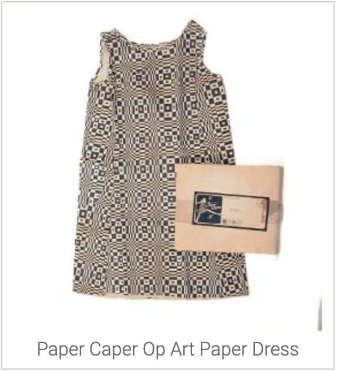

“It was a marvellous time. In the ‘60s you were knocked in the eyeballs.
Everybody, everything was new.” Diana Vreeland – Editor in Chief of US Vogue 1963 – 1971
“It was a marvellous time. In the ‘60s you were knocked in the eyeballs.
Everybody, everything was new.” Diana Vreeland – Editor in Chief of US Vogue 1963 – 1971
The Fashion Revolution of the 1960s
Not since the 1920s had the way people dressed changed so radically. In the mid 1960s, thanks to a convergence of music, film, fashion and social change, the mod look blasted out of London, with the boutiques of Kings Road and Carnaby Street at the epicentre of the scene. For the first time in history young people had other options than to dress like their parents. Up until then clothes for young women were known as Juniors or Misses – a watered down version of adult clothes. The sixties changed all that when young people started making the clothes they wanted to wear, clothes that completely excluded their parents’ generation. The mod look was about looking forward to the future: sharp, bold, minimalist – mod-ernist.
The Mod Look
Mary Quant said of this time in her biography that she wanted ‘young people to have a fashion of their own, absolutely 20th century fashion’. The monochrome geometric prints of Op Art perfectly complemented the bold shapes of the mod look, which are perfectly parodied in William Klein’s 1966 film Qui etes-vous Polly Maggoo? The sharp five point Vidal Sassoon haircut and the simple A line shift dresses by Andre Courreges and Pierre Cardin soon entered the mass market, having been quickly copied and mass reproduced thanks to the new large scale availability of synthetic fabrics.
Op Art Explosion
As Op Art and the artists at the movement’s forefront gained recognition; the youth culture explosion of the sixties was gaining momentum. Mod bands such as The Who crossed over to the U.S. and everyone wanted a piece of The London Look. The mod style, which was already waning in the U.K., reached the other side of the Atlantic at around the same time as the 1965 exhibition The Responsive Eye in New York, which showcased the work of Bridget Riley and Victor Vasarely. Suddenly Op Art patterns started appearing on everything from clothes to advertisements, stationery, furnishing fabrics and that useful garment peculiar to the 1960s: the paper dress.
Bridget Riley and Victor Vasarely had polar opposite views on the commercialisation of their work. While Vasarely thought that art should be for everyone and even collaborated with textile firms, Riley was dismayed at seeing her original work co-opted for commercial use without her permission. In February 1965, Riley was being driven from the airport to the Museum of Modern Art in New York. Travelling up Madison Avenue she saw in the shop windows row upon row of dresses with designs lifted from her paintings. Riley denounced the way her art was being “vulgarized in the rag trade” and publicly expressed her ‘deep anger’ at the commercialisation of one of her paintings by a New York dress firm. The firm was producing dresses with a design based on one of her paintings which was owned by the director of the firm. She tried to sue for copyright infringement but was unsuccessful.
Mary Quant is usually the name cited as the inventor of the miniskirt. In fact both John Bates (under the name Jean Varon) and André Courrèges had shown mini lengths before Mary Quant. Courrèges had shown mini dresses in 1964, but they had not been well received. John Bates was one of the most prominent designers of the 1960s and memorably designed the iconic costumes worn by Diana Rigg in The Avengers. It was Quant though, who popularized the mini and the one very practical element that would make them somewhat wearable: tights. Up until the mid sixties stockings were still the only option and longer length stockings were initially produced to be worn with mini skirts. Quant contacted suppliers of theatrical costumes who, thanks to advances in synthetic fibres and manufacturing techniques, could make opaque woven tights in the same colours as the skirts she designed. This meant skirt lengths could rise and rise while still protecting the modesty of the wearer to a certain extent.
Although Pop Art was a separate movement, it is often confused or combined with Op Art when discussing sixties fashion. Pop Art also had a huge influence on fashion during the mid 1960s with the graphic work of Pop artists such as Andy Warhol being printed onto clothing. The most iconic example of art meeting fashion in the1960s is Yves Saint Laurent’s Mondrian shift dress. It was featured on the cover of French Vogue in September 1965; cheaper mass market copies inevitably followed. Also not to be confused with Op Art: geometric styles were usually made up of panels of fabric in boldly contrasting colours such as black and white or bright primary colours juxtaposed. Op Art was all about the print.
Textile companies Heal’s, Hull Traders and Edinburgh Weavers led the way in developing Op Art prints into furnishing fabrics; though usually the colours and patterns were more muted than the eye straining patterns used for clothing. Edinburgh Weavers was the experimental arm of Scottish textile firm Morton Sundour, which commissioned leading artists, including Victor Vasarely, to create patterns. Eduardo Paolozzi designed prints for Hull Traders and Barbara Brown designed for Heal’s. Barbara Brown in particular was probably the most prolific designer of Op Art influenced furnishing fabrics.
As the sixties swung on, Op-Art prints and the mod look gave way to the swirling prints of psychedelia in the late sixties, then led to more muted colours and organic forms taken from nature, such as the floral art nouveau motifs made popular by Biba and later Celia Birtwell’s prints for Ossie Clark.
The resurgence of fabrics by Finnish company Marimekko has led to a new generation of fans inspired by their bright prints, loved the first time around in the sixties. Missoni’s stripes and zigzags owe something to Op Art but they are woven, rather than printed. UK textile artist Helen Owen has created some fascinating Op Art textile designs over the past few years and continues to work in this style. Eley Kishimoto’s op-art flame print has been used on everything from cars to backpacks to motorbike helmets in the past few years. Op Art is far from dead.
Copyright © 2018 Op-Art.co.uk.
Image source from http://www.op-art.co.uk/op-art-fashion/
CC BY-NC-SA 4.0